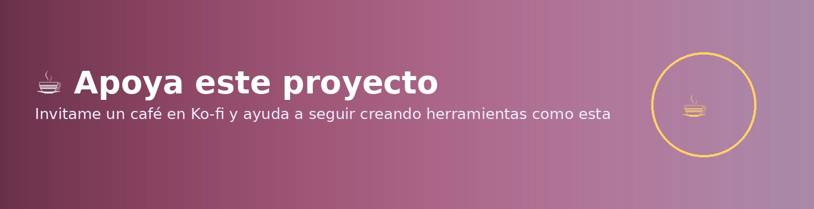

🧙♂️
Caldero Mágico
Toca cada ingrediente para personalizarlo, o invoca uno al azar
✨ +125,000 combinaciones posibles
Combina tres ingredientes para descubrir un personaje inesperado.
02 · La Especia Secreta
???
03 · La Poción que lo Transforma Todo
???
👆 Toca cualquier ingrediente para cambiarlo

☕ Ko-fi
☕ Invítame un café
✅ PNG descargado — listo para Stories
Mantén presionada la imagen para guardarla